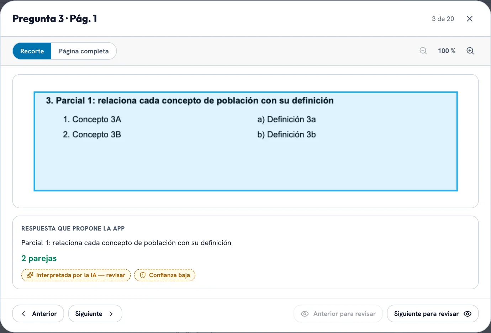
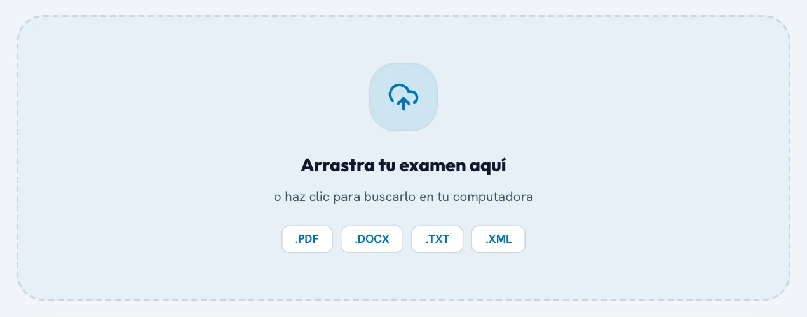
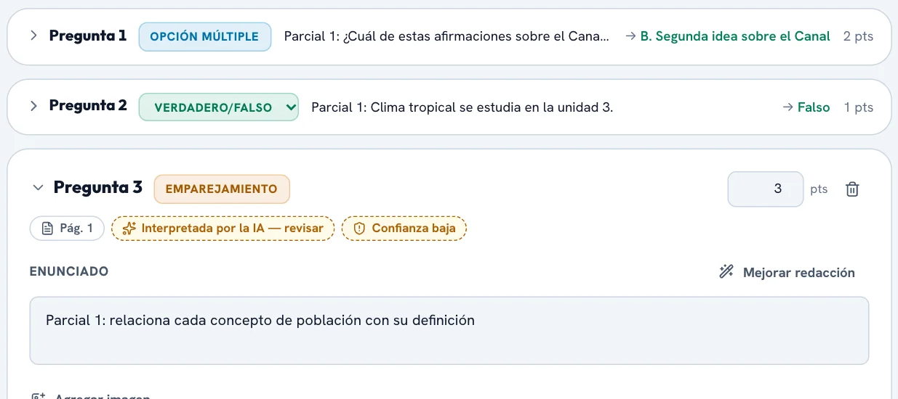
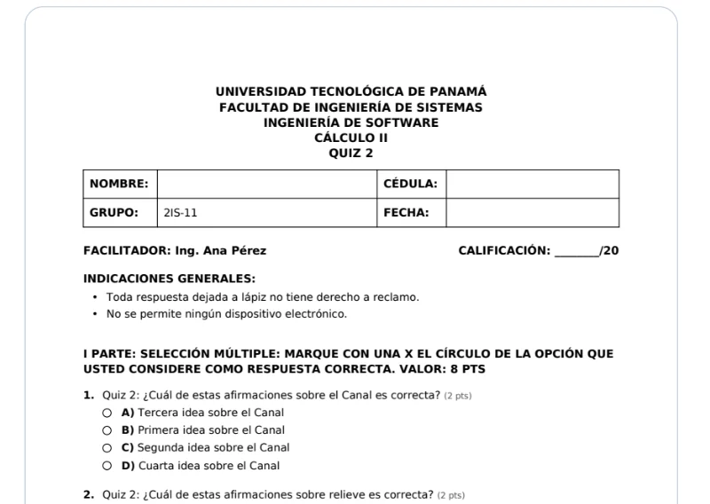
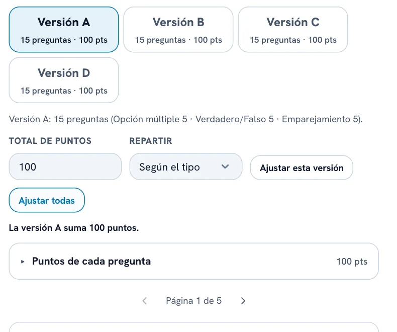
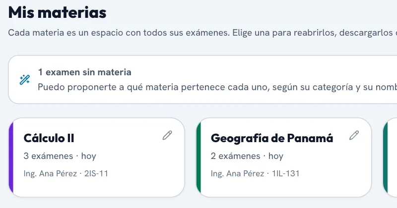

Cátedra
Tu espacio para gestionar tus evaluaciones: del documento a Moodle y al papel.
Del examen que ya tienes, a Moodle y al papel.
Sube tu examen en PDF, Word o TXT, o un XML de Moodle que ya tengas. Cátedra lo ordena en preguntas, tú lo revisas con tu original al lado y lo exportas como Moodle XML, como PDF o Word listo para imprimir o en varias versiones.
1.¿Qué necesitas hacer con tu examen?Marque todas las que correspondan.
-
Llevarlo a Moodle
Moodle XML con los siete tipos de pregunta, sus puntos y sus respuestas.
-
Imprimirlo
PDF o Word con tu encabezado, tus logos y su clave; o folleto con hoja de respuestas.
-
Sacar varias versiones
De un banco grande, hasta 12 parciales distintos, cada uno con su clave.
-
Ordenarlo por materia
Todos tus exámenes en un lugar, para reabrirlos, descargarlos o imprimirlos de nuevo.
Respuesta: todas las anteriores.

- Programa:
- Cátedra
- Versión:
- última en GitHub
- Sistema:
- macOS (chip Apple)
- Tamaño:
- —
Facilitador: túActividad: presentación de Cátedra
Indicaciones generales
- Cátedra no inventa preguntas ni respuestas: lo que tu documento no trae queda señalado.
- La IA ayuda a ordenar el examen; tú revisas cada pregunta antes de exportar.
- Tu archivo se procesa en tu equipo: a la IA solo va el texto extraído y, si hace falta, imágenes de algunas páginas. Sin cuenta, sin cookies y sin analítica.
Cómo funciona
Indicación: siga los pasos en el orden en que ocurren.
-
Sube tu documento
Arrástralo o búscalo en tu equipo: PDF, Word, TXT o un XML de Moodle. No necesita un formato especial; basta con que las preguntas estén numeradas o separadas.
Un PDF escaneado se lee como imagen (hasta 15 páginas) y todas sus respuestas quedan con confianza baja, para que las verifiques.

Figura 2. Arrastra tu examen aquí. -
Revisa con tu original al lado
Cada pregunta indica su página: ábrela y compárala con lo que Cátedra leyó. Las respuestas que tu documento marca (color, subrayado, marca de verificación) las resuelve el código; lo que interpreta la IA queda señalado.
- Pág. 3
- En qué página de tu PDF está la pregunta.
- Interpretada por la IA, revisar
- La IA ordenó esta parte: confírmala.
- Confianza baja
- Mírala primero.

Figura 3. La revisión: una fila por pregunta; la que pide atención se abre sola y muestra de dónde salió y qué tanto confiar. Datos de ejemplo. -
Exporta lo que necesites
- Moodle XML, para importarlo desde el banco de preguntas de tu curso, con los puntos que tú decidas.
- PDF con su clave, o folleto, hoja de respuestas y clave, con tu encabezado y tus logos.
- Word editable con exactamente lo mismo que el PDF, para cambiarlo antes de imprimir.
- Un ZIP con varias versiones, cada una con su propia clave.
- Puntos a tu manera: escribes cuánto vale cada pregunta de cada tipo y el total del examen es la suma.
- Puntos enteros en el PDF, si prefieres calificar sin decimales. El XML conserva los del editor.

Figura 4. La vista previa del PDF, página por página, con tu encabezado. Datos de ejemplo.
Verdadero o falso: la IA, tus datos y tus puntos
Indicación: marque la respuesta correcta. Aquí la IA no decide por ti.
-
1.
Cátedra inventa las respuestas que tu documento no trae.
VerdaderoFalsoSin marca, la pregunta queda señalada. Si quieres, puedes pedir una sugerencia a la IA: solo se aplica si la aceptas, y se queda marcada como «Sugerida por IA».
-
2.
Tus exámenes se guardan en una cuenta en la nube.
VerdaderoFalsoNo hay cuenta, ni cookies, ni analítica. Tu archivo se procesa en tu equipo; a la IA solo se envía el texto extraído y, cuando hace falta, imágenes de algunas páginas.
-
3.
Puedes revisar y exportar sin conexión a internet.
VerdaderoFalsoSolo hace falta conexión para que la IA ordene las preguntas y para buscar actualizaciones.
-
4.
Necesitas una clave de la IA de Google (Gemini).
VerdaderoFalsoGoogle ofrece un nivel sin costo, con límites de uso (consúltalo en AI Studio). Cátedra te explica cómo conseguirla la primera vez que la abres y la guarda cifrada en tu equipo.
-
5.
Los puntos enteros del PDF cambian el XML de Moodle.
VerdaderoFalsoEl XML conserva los puntos del editor. Solo el PDF los reparte en enteros, con el mismo total, para calificar en papel sin redondeos.
-
6.
Cátedra te avisa cuando algo llegaría a Moodle distinto de lo que ves.
VerdaderoFalsoSon avisos, no bloqueos. Por ejemplo: «Completar» vale puntos enteros, un número como «1,000» puede ser mil o uno con tres decimales, y una opción como «todas las anteriores» no se mezcla en Moodle.
Emparejamiento: qué resuelve cada función
Indicación: relacione cada necesidad con lo que hace Cátedra. Como en tus exámenes, la segunda columna va mezclada.
-
1.Tengo un examen de 100 preguntas y quiero tres parciales.
e)VersionesHasta 12 parciales de un banco, en un ZIP, cada uno con su clave.
-
2.Mis exámenes están repartidos por todas partes.
a)Mis materiasUna biblioteca por materia, con todo lo que exportaste.
-
3.Debo imprimirlo con el membrete de mi facultad.
d)Perfiles de encabezadoInstitución, logos, márgenes y tipo de letra a tu gusto.
-
4.Quiero calificar en papel sin decimales.
b)Puntos enterosEl PDF reparte los puntos sin decimales y con el mismo total.
-
5.No sé por dónde empezar.
f)Un robot ayudanteTe explica cada pantalla, paso a paso.
-
6.Quiero que cada tipo de pregunta valga lo que yo decida.
c)Puntos según el tipoEscribes cuánto vale cada pregunta de cada tipo y el total es la suma.
Y entiende los siete tipos de pregunta de Moodle:
- Opción múltiple
- Verdadero/Falso
- Emparejamiento
- Completar
- Ensayo
- Respuesta corta
- Numérica


Antes de descargar
Indicación: lea lo que sigue; es lo que preguntan los docentes antes de instalar.
¿Qué necesito para empezar?
Una computadora con macOS con chip Apple (M1 o posterior) o con Windows, tus exámenes y una clave de la API de Gemini, la IA de Google.
La clave se consigue en Google AI Studio. Cátedra te guía la primera vez, la comprueba con Google y la guarda cifrada en tu equipo.
¿Y si mi Mac es Intel?
No: la versión para macOS está compilada para chip Apple (M1 o posterior). Si no sabes cuál tienes, abre el menú Apple → «Acerca de este Mac» y mira «Chip» o «Procesador».
¿Qué aviso de seguridad voy a ver al abrirla?
Cátedra aún no está firmada con un certificado de Apple ni de Microsoft, así que tu sistema puede mostrar un aviso la primera vez. Descárgala siempre desde esta página o desde GitHub.
- macOS: abre Ajustes del Sistema → Privacidad y seguridad y elige «Abrir de todos modos».
- Windows: si aparece «Windows protegió su PC», pulsa «Más información» y luego «Ejecutar de todas formas».
¿Cómo sé que lo que descargué es el archivo original?
Cada versión publica la huella SHA-256 de sus instaladores, en las notas de la versión y en el archivo SHA256SUMS.txt. Si la calculas en tu equipo y da el mismo valor, el archivo es exactamente el que se publicó.
- macOS: en Terminal,
shasum -a 256 Catedra.dmg. - Windows: en el Símbolo del sistema,
certutil -hashfile Catedra_Setup.exe SHA256.
Si el valor no coincide, no instales ese archivo.
¿Qué se envía a Google y es privado?
Tu archivo se procesa en tu equipo. A Google solo se envía lo necesario para ordenar las preguntas: el texto extraído y, cuando hace falta, imágenes de algunas páginas.
Con la clave gratuita de Gemini, según los términos de Google, lo que se envía puede usarse para mejorar sus productos y personas de Google pueden revisarlo; con el plan de pago (facturación activada en tu cuenta de Google) no. Si tus exámenes son confidenciales, activa la facturación.
¿Se conecta con Moodle?
No directamente. Cátedra genera el archivo Moodle XML y tú lo importas desde el banco de preguntas de tu curso. Es una herramienta independiente: no es de Moodle ni lo pretende.
¿Dónde pido ayuda?
El Manual de usuario (PDF) explica cada paso con capturas. Si algo no funciona, cuéntalo en GitHub.
Descarga Cátedra
Indicación: marque su sistema.
Fin de la hoja.Antes de entregar, revise sus respuestas.